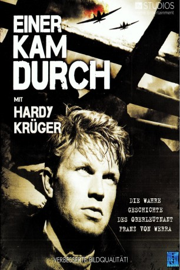
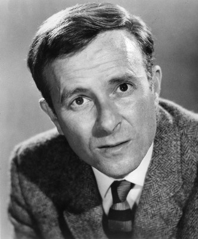

#8661 Einer kam durch
Alternativ: The One That Got Away
 
 IMDB-Wertung: 7.2 / 10
IMDB-Wertung: 7.2 / 10  Metascore: 0
Metascore: 0 
Der Film beruht auf einer wahren Begebenheit: Die Luftschlacht um England ist 1940 auf ihrem Höhepunkt. Die Messerschmitt Bf 109 von Franz von Werra wird abgeschossen und er wird gefangengenommen. Das anschließende Verhör kann ihn zwar einschüchtern, hindert ihn aber nicht an seinem einzigen Ziel: Flucht. Er flieht zwei Mal, wird aber immer wieder gefangengenommen. Dann soll er in ein Gefangenenlager in Kanada überstellt werden. Auf dem Weg dorthin gelingt es ihm aus dem Gefangenentransportzug zu entkommen. Er schlägt sich in die damals noch neutralen USA durch. Im Nachspann ist auf den englischsprachigen Texttafeln zu lesen, dass er von dort über Mittel- und Südamerika zurück in das Deutsche Reich gelangte, wo er wieder als Jagdflieger eingesetzt wurde. Bei einem Routineflug über der Nordsee stürzte er wegen Motorschaden ab. Das Flugzeug und die sterblichen Überreste von Werras werden nie gefunden.
Jahr: 1957
Dauer: 110 Minuten
FSK:
Land: England Studio: J. Arthur Rank FilmTonspuren:
Untertitel: Deutsch,
Auflösung: 1080p (1792x1080) Größe: 13209 MB
Genre: Drama, Abenteuer, Krieg
Regisseur: Roy Ward Baker
Drehbuch: Howard Clewes
Soundtrack: Hubert Clifford
Darsteller:
 Hardy Krüger als Franz Von Werra
Hardy Krüger als Franz Von Werra Colin Gordon als Army Interrogator
Colin Gordon als Army Interrogator Michael Goodliffe als R.A.F. Interrogator
Michael Goodliffe als R.A.F. Interrogator Jack Gwillim als Commandant, Grizedale
Jack Gwillim als Commandant, Grizedale- Andrew Faulds als Lieutenant, Grizedale
-  Alec McCowen als Duty Officer, Hucknall
- Robert Crewdson als German Prisoner
- George Roubicek als German Prisoner
- Frederick Jaeger als German Prisoner
 Richard Marner als German Prisoner
Richard Marner als German Prisoner- Robert Cawdron als Officer on Horseback (uncredited)
- Bernard Horsfall als Lieutenant - Kent (uncredited)
- Glyn Houston als Harry 'Hurricane' (uncredited)
- Stratford Johns als Second Detective (uncredited)
- Robert Raglan als Bystander (uncredited)
- Michael Ripper als The Corporal Who Frisks Franz (uncredited)
 Norman Rossington als Sergeant - Swanick (uncredited)
Norman Rossington als Sergeant - Swanick (uncredited) Reg Thomason als German Prisoner of War (uncredited)
Reg Thomason als German Prisoner of War (uncredited) Frank Williams als Station Porter (uncredited)
Frank Williams als Station Porter (uncredited)- Terence Alexander als R.A.F. Intelligence Officer
- Julian Somers als Booking Clerk
- Harry Lockart als German Prisoner
- George Mikell als German Prisoner
- John Van Eyssen als German Prisoner
- Paul Hansard als German Prisoner
- Gerald Andersen als Adjutant - Swanick (uncredited)
- Arthur Bentley als Cook - Swanick (uncredited)
- Victor Brooks als Police Sergeant (uncredited)
- Adrian Cairns als Bit Part (uncredited)
- Edward Cast als Driver - Hucknall (uncredited)
- Cyril Chamberlain als Sergeant 'Later' (uncredited)
- Peggy Ann Clifford als Train Conductor (uncredited)
- Jan Conrad als German Orderly in Canada (uncredited)
- Reed De Rouen als Canadian Truck Driver (uncredited)
- Robert Dorning als Corporal Wilson (uncredited)
- Michael Golden als First Detective (uncredited)
- Celia Hewitt als Farm Girl 2 (uncredited)
- George Hilsdon als Prisoner Escort (uncredited)
- George Hirste als Jim - Old Porter (uncredited)
- Charles Morgan als Manager at Hucknall (uncredited)
- Al Mulock als US Patrolman at Ogdensburg (uncredited)
- Etain O'Dell als Farm Girl 1 (uncredited)
- Anthony Sagar als Cook - Kent (uncredited)
- Jack Taylor als First Gunner - Kent (uncredited)
- Ben Williams als Policeman at Hucknall (uncredited)
Datei: X:\1950-1959\Einer kam durch (1957, FSK, 1792x1080).mkv seit 13.04.2018
Festplatte: HD 1900-1970
 Es gibt insgesamt 141 Filme in der Gruppe '1950-1959'
Es gibt insgesamt 141 Filme in der Gruppe '1950-1959'